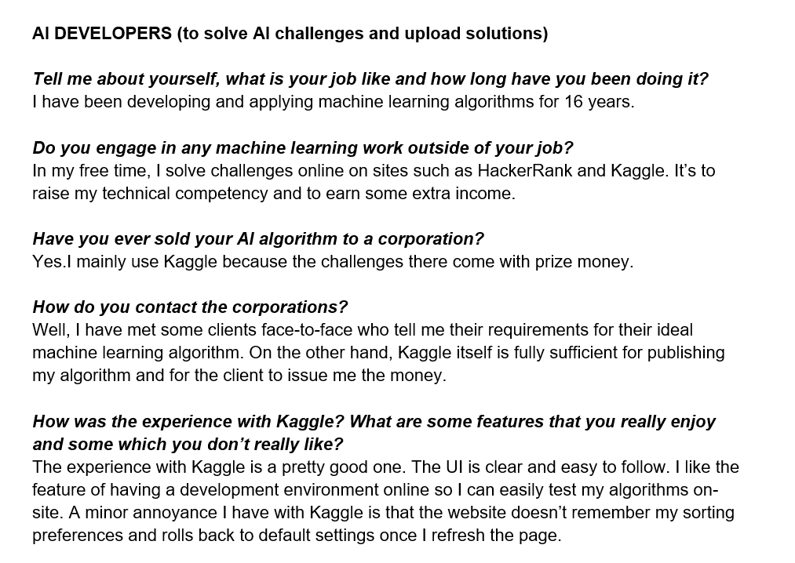
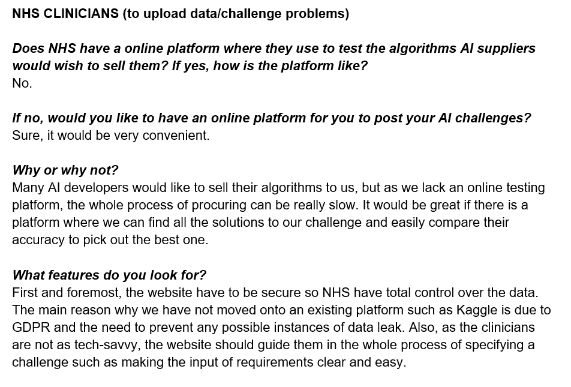
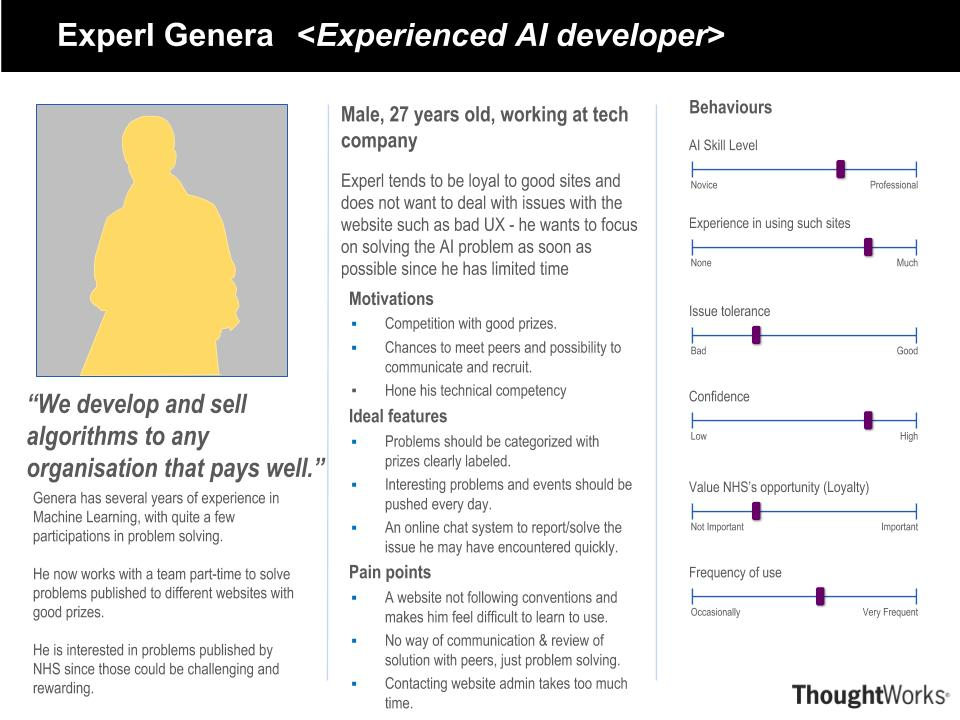
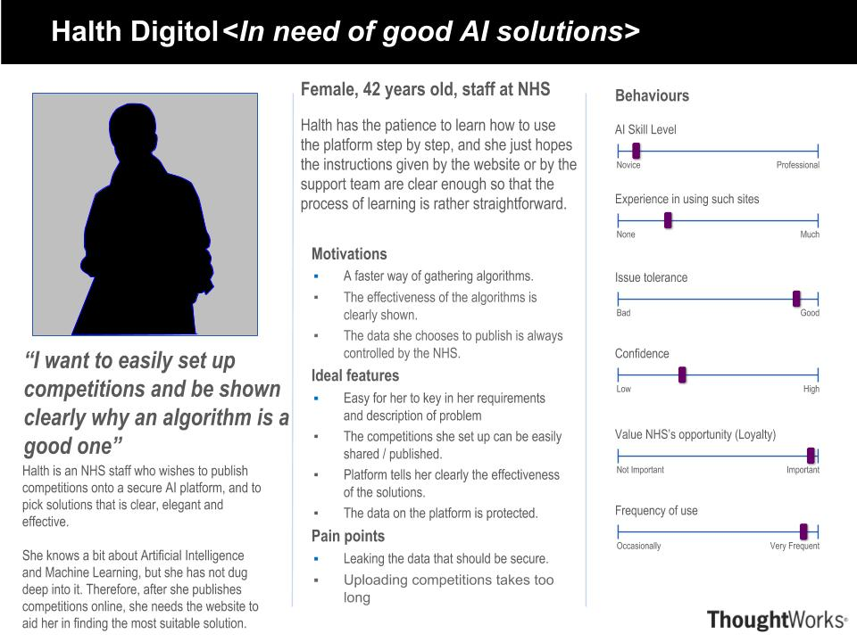
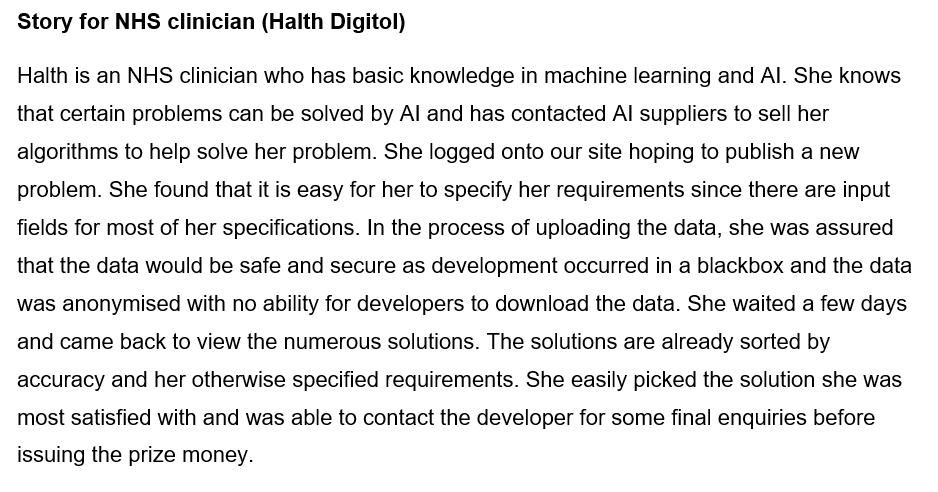
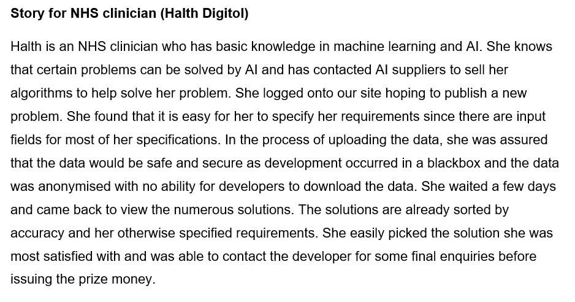

Requirements
Introduction to project background and client
NHS has many suppliers who want to sell them AI algorithms. However, NHS lacks a platform to test these algorithms. They require a platform where they can easily sift through the multitude of algorithms and select the best one.
The client for this project is NHS Digital. Specifically, our contact person is Mr Joseph Connor, the ML & AI Lead of the department.
Project goals
With the aforementioned background, the project was conceptualised to create such a platform where NHS could interact with AI developers. It is place where developers could easily program their solutions while NHS clinicians could post challenges and choose the best solutions.
Also, we envision a welcoming site where less experienced developers can further their expertise at the tutorial page. The final extension to the platform would be an active forum where developers and clinicians can share their ideas and knowledge.
Requirement gathering
The initial project requirements are provided by the client and discussed over several meetings. As the client and the actual users differ, there was a need to gather user requirements as well. This was done via a semi-structured interview with both clinicians and AI developers. The sample responses can be found directly below whereas the final requirements list is at bottom of this page.
 Personas
There are two main personas identified based on the user types the site is supposed to serve: AI developers and NHS clinicians. The pictures below provide detailed information of the personas.
 Storyboards
 

MoSCoW requirement list
Must Have
- Log-in feature which acts as a layer of security as only people with account can access site and thus data)
- Setting up of different user types (clinician and developer)
- Differing interfaces and functionalities for developers and clinicians (e.g.create challenge vs create solution respectively)
- Set up JupyterHub Server
- Integrate JupyterHub to the site to provide onsite coding environment
- Ability to upload/download CSV files (results and dataset)
- Challenge page consisting of different challenges and their description
- Individual challenge page (description, evaluation, data) and ability to join challenge (i.e. challenge appears on profile and triggers ability to submit solution)
- Solutions page
- Individual solution page (description, code and results in CSV format)
- Personalised profile page (listing solutions submitted, challenges followed and contact details)
- Deploy on Azure and provide cloud computing services
Should Have
- Ability to restrict download of data for more sensitive information (clinician)
- Hosting of datasets that are not part of any challenges (i.e. a dataset page)
- A 'Learn' web page with structured tutorials on data science and machine learning
Could Have
- A forum page for developers and clinicians to discuss issues
- Ability to restrict access to solutions (private vs public setting as developers may not want to share their solution)
Won't Have
- Provision of external machine learning tools and algorithms such as integration with SageMaker
User cases
- User case diagram.....
- List of user cases....